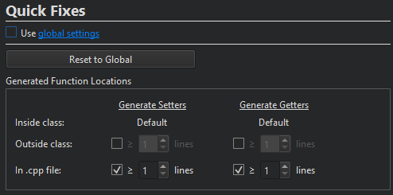

Specify settings for quick fixes
To refactor your code, select quick fixes in the context menu in the Edit mode.
To create custom quick fix settings for a particular project, go to Projects > Project Settings > Quick Fixes and clear Use global settings.

To revert to global settings, select Reset to Global. To delete the custom settings, select Use global settings, and then select Delete Custom Settings File.
See also Apply quick fixes, Find symbols, Rename symbols, C++ Quick Fixes, QML Quick Fixes, Quick Fixes, and Configuring Projects.